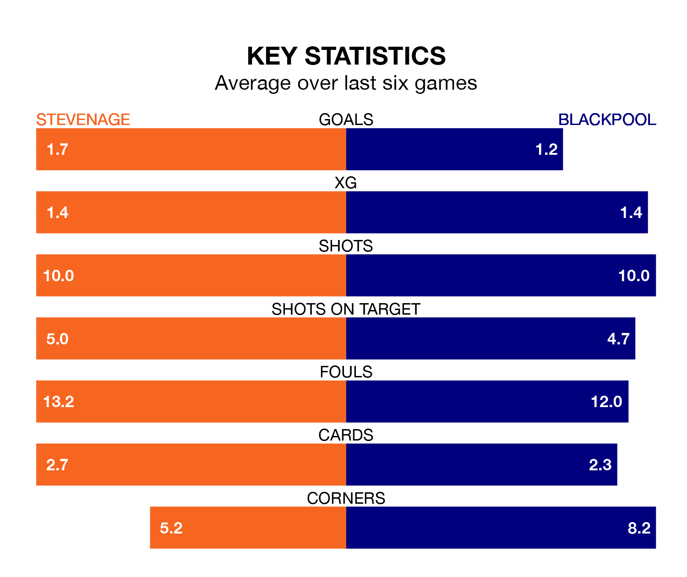

Blackpool travel to Stevenage on Saturday in EFL League One.
The visitors come into the game on the back of a draw in their last match, having tied with Charlton Athletic 1-1 at home, with a goal from Karamoko Dembele.
The Boro, meanwhile, won their last match, 3-2 against Wigan Athletic, with their goals scored by Louis Thompson, Jamie Reid and Carl Piergianni.
In Reid, Stevenage have the league's most on-form striker so far this season. He has notched 16 goals in 26 appearances.
His goal rate of one every 129 minutes is slightly quicker than that of Jordan Rhodes, Blackpool's top scorer with a goal every 140 minutes, and a total of 15 goals in 25 games.
With 47 goals in 29 games so far this season, the Seasiders are scoring more than average in the league with 1.6 goals per game. And they are conceding fewer than average, letting in 34 goals at a rate of 1.2 per game.
The Boro are also above average scorers, with 1.5 goals per game, compared to a league average of 1.3. They have conceded 1.0 goal per game.
The home side are sixth in the table after 27 games, of which they have won 14 and drawn seven, earning 49 points.
The visitors are two places behind Stevenage in eighth, with 13 wins and seven draws putting them on 46 points.
Stevenage are in mixed form in EFL League One, with three wins and a draw from their last six games.
And also with three wins and a draw over that period, Blackpool's form is identical – they have both taken 10 points from 18.
Updated: 13:20 (UTC), 29/01/24